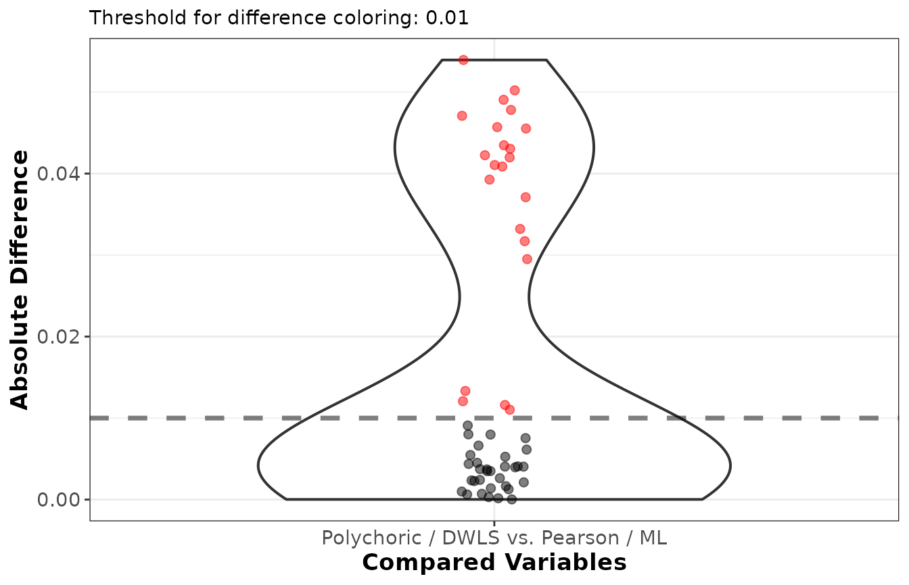

EFA with ordinal and missing data
Source:vignettes/Ordinal_and_missing_data.Rmd
Ordinal_and_missing_data.RmdTwo features of real data complicate an exploratory factor analysis:
items are often ordinal (a handful of Likert categories
rather than a continuous scale), and some responses are usually
missing. EFAtools handles both within the
ordinary efa_fit() workflow, without switching packages.
This vignette shows how. It assumes familiarity with the basic workflow
covered in the EFAtools vignette and focuses
on what changes for ordinal and incomplete data.
So that the examples are self-contained and reproducible, we generate
the data with efa_simulate() from a known three-factor
population (18 indicators, six per factor, with moderately correlated
factors), using fixed seeds throughout.
Lambda <- population_models$loadings$baseline # 18 x 3 loading pattern
Phi <- population_models$phis_3$moderate # moderate factor intercorrelationsOrdinal Data
Rating-scale items are not continuous: they take a few ordered values, and a Pearson correlation between two such items underestimates the association between the underlying constructs. The polychoric correlation instead estimates the correlation of the continuous latent variables assumed to underlie the observed categories, and pairing it with a categorical estimator removes the bias that treating the items as continuous introduces.
We draw 400 responses on a four-category scale. Because the latent
data are normal, cutting them at the standard-normal category thresholds
already leaves the population polychoric correlation of the
discretised data equal to the target correlation;
match = "polychoric" records that this is what we are
after, and would reject the request had we asked for non-normal
marginals.
d_ord <- efa_simulate(N = 400, Lambda = Lambda, Phi = Phi,
categories = 4, match = "polychoric", seed = 2024)$data
d_ord[1:5, 1:6]
#> V1 V2 V3 V4 V5 V6
#> [1,] 4 4 4 3 2 4
#> [2,] 3 1 1 1 3 1
#> [3,] 1 1 1 2 2 1
#> [4,] 4 4 3 4 4 3
#> [5,] 2 4 2 3 2 1Screening Ordinal Data
efa_screen() reports, among its diagnostics, how many
response categories each item has and whether the data are multivariate
normal — the two things that decide whether an ordinal treatment is
worthwhile.
efa_screen(d_ord, seed = 42)
#>
#> ── Sampling adequacy and sphericity ────────────────────────────────────────────
#>
#> ✔ The overall KMO value for your data is meritorious (Overall KMO = 0.828).
#> These data are probably suitable for factor analysis.
#>
#> ✔ The Bartlett's test of sphericity was significant at an alpha level of .05.
#> These data are probably suitable for factor analysis.
#> 𝜒²(153) = 1306.76, p < .001
#>
#> ── Multicollinearity ───────────────────────────────────────────────────────────
#>
#> ✔ Determinant: 0.0357. No concern (a value near 0 signals multicollinearity).
#> ✔ Condition number: 7.919. No concern (large values signal near-collinear variables).
#>
#> ── Per-variable diagnostics ────────────────────────────────────────────────────
#>
#> variance missing SMC MSA flags
#> V1 1.248 0 0.218 0.830
#> V2 1.298 0 0.241 0.817
#> V3 1.222 0 0.278 0.793
#> V4 1.223 0 0.225 0.829
#> V5 1.211 0 0.228 0.801
#> V6 1.266 0 0.297 0.810
#> V7 1.260 0 0.242 0.839
#> V8 1.187 0 0.239 0.836
#> V9 1.182 0 0.259 0.832
#> V10 1.153 0 0.257 0.835
#> V11 1.150 0 0.282 0.806
#> V12 1.193 0 0.244 0.852
#> V13 1.373 0 0.227 0.819
#> V14 1.317 0 0.290 0.851
#> V15 1.206 0 0.224 0.853
#> V16 1.193 0 0.227 0.859
#> V17 1.282 0 0.311 0.832
#> V18 1.223 0 0.274 0.804
#>
#> ── Multivariate normality ──────────────────────────────────────────────────────
#>
#> ✔ Mardia's skewness: 𝜒²(1140) = 1008.24, p = 0.998.
#> ✖ Mardia's kurtosis: z = -6.11, p < .001.
#> ✖ Henze-Zirkler: HZ = 1, p < .001.
#> These data depart from multivariate normality.
#>
#> ── Outliers ────────────────────────────────────────────────────────────────────
#>
#> ℹ 4 of 400 observations were flagged as multivariate outliers (robust distance > 5.61).
#>
#> ── Recommendations ─────────────────────────────────────────────────────────────
#>
#> ! 18 items have fewer than 5 response categories; treating them as ordinal
#> (polychoric correlations with a categorical estimator such as DWLS) is less
#> biased than normal-theory ML.
#> ! Bartlett's test is significant, but it assumes multivariate normality and
#> grows more sensitive as N increases; because these data are non-normal, treat
#> it as uninformative here and rely on the KMO.
#> ! 4 observations were flagged as potential multivariate outliers; inspect them
#> (see `$outliers$flagged`) before down-weighting or excluding.The sampling adequacy (KMO) and sphericity checks confirm the data are factorable. The telling parts are the multivariate-normality section and the recommendations: Mardia’s kurtosis and the Henze-Zirkler test reject normality, and the recommendations flag that every item has fewer than five response categories. Together these spell out the consequence — with few categories and non-normal data, a polychoric correlation with a categorical estimator such as DWLS is less biased than normal-theory maximum likelihood, and the normal-theory standard errors and fit indices are better replaced by robust (sandwich) versions.
Polychoric Correlations, DWLS, and Robust Standard Errors
efa_fit() computes the polychoric correlation when
cor_method = "poly" and fits it with diagonally weighted
least squares when estimator = "DWLS" — the estimator
recommended for ordinal data, which weights each correlation residual by
the inverse asymptotic variance of the corresponding polychoric
correlation. Requesting se = "sandwich" adds robust
standard errors and a scaled (Satorra-Bentler) chi-square that stay
valid under the non-normality these data show.
efa_poly <- efa_fit(d_ord, n_factors = 3, cor_method = "poly", estimator = "dwls",
rotation = "oblimin", se = "sandwich")
efa_poly
#>
#> EFA performed with estimator = 'DWLS' and rotation = 'oblimin'.
#>
#> ── Rotated Loadings ────────────────────────────────────────────────────────────
#>
#> F1 F2 F3 h2 u2
#> V1 .053 .028 .521 .297 .703
#> V2 .070 -.034 .569 .339 .661
#> V3 .092 -.063 .621 .403 .597
#> V4 -.068 .110 .560 .337 .663
#> V5 -.063 -.048 .621 .359 .641
#> V6 -.041 .047 .683 .471 .529
#> V7 .024 .577 .017 .348 .652
#> V8 -.002 .584 .014 .345 .655
#> V9 -.012 .630 -.022 .385 .615
#> V10 .045 .622 -.070 .389 .611
#> V11 -.063 .656 .032 .416 .584
#> V12 .067 .532 .052 .332 .668
#> V13 .533 .023 .018 .299 .701
#> V14 .665 .005 .012 .449 .551
#> V15 .576 -.021 .044 .338 .662
#> V16 .563 .014 .026 .331 .669
#> V17 .675 .031 -.015 .466 .534
#> V18 .642 -.002 -.063 .395 .605
#>
#> Legend:
#> bold = |loading| >= .300
#> grey = below cutoff
#> red h2/u2 = Heywood-relevant value
#>
#> ── Factor Intercorrelations ────────────────────────────────────────────────────
#>
#> F1 F2 F3
#> F1 1.000
#> F2 .352 1.000
#> F3 .252 .254 1.000
#>
#> ── Variances Accounted for ─────────────────────────────────────────────────────
#>
#> F1 F2 F3
#> SS loadings 2.302 2.219 2.177
#> Prop Tot Var .128 .123 .121
#> Cum Prop Tot Var .128 .251 .372
#> Prop Comm Var .344 .331 .325
#> Cum Prop Comm Var .344 .675 1.000
#>
#> ── Model Fit ───────────────────────────────────────────────────────────────────
#>
#> scaled χ²(102) = 100.83, p = .514
#> CFI: 1.00
#> TLI: 1.00
#> RMSEA [90% CI]: .00 [.00; .03]
#> AIC: NA
#> BIC: NA
#> CAF: .51
#> SRMR: .03The pattern matrix recovers the three factors cleanly (six indicators
each), and the model fit reports a scaled chi-square
with its CFI, TLI, and RMSEA. Because the chi-square is a scaled
statistic, the AIC and BIC (which are defined on the unscaled likelihood
discrepancy) are left NA.
For binary items, cor_method = "tetra" computes
tetrachoric correlations and runs the same DWLS and sandwich
machinery.
The robust standard errors accompany each estimated quantity; for the rotated loadings, for example:
round(efa_poly$SE$rot_loadings, 3)
#> F1 F2 F3
#> V1 0.057 0.057 0.051
#> V2 0.057 0.054 0.051
#> V3 0.057 0.052 0.048
#> V4 0.055 0.055 0.052
#> V5 0.051 0.053 0.053
#> V6 0.052 0.052 0.049
#> V7 0.059 0.056 0.052
#> V8 0.051 0.053 0.048
#> V9 0.051 0.054 0.047
#> V10 0.052 0.054 0.050
#> V11 0.053 0.054 0.050
#> V12 0.058 0.054 0.054
#> V13 0.055 0.057 0.054
#> V14 0.051 0.055 0.052
#> V15 0.057 0.056 0.053
#> V16 0.056 0.057 0.049
#> V17 0.051 0.054 0.047
#> V18 0.056 0.055 0.049The matching confidence intervals live in efa_poly$CI,
and summary(efa_poly) prints them as a labelled table
alongside the model diagnostics.
Why Not Just Treat the Items as Continuous?
To see what the ordinal treatment buys, fit the same data as if they
were continuous — a Pearson correlation with maximum likelihood — and
compare the rotated loadings with efa_compare().
efa_cont <- efa_fit(d_ord, n_factors = 3, cor_method = "pearson", estimator = "ML",
rotation = "oblimin")
cmp <- efa_compare(efa_poly$rot_loadings, efa_cont$rot_loadings,
x_labels = c("Polychoric / DWLS", "Pearson / ML"))
cmp
#> Mean [min, max] absolute difference: 0.0171 [ 0.0000, 0.0539]
#> Median absolute difference: 0.0064
#> Root mean squared distance (RMSE): 0.0252
#> Max decimals where all numbers agree in absolute value: 0
#> Minimum number of decimals provided: 17
#> Differing indicator-to-factor correspondences: 0 (highest loading), 0 (all |loadings| >= 0.3)
#>
#> F1 F2 F3
#> V1 .0066 .0024 .0317
#> V2 .0040 -.0061 .0332
#> V3 .0080 -.0055 .0455
#> V4 -.0053 .0121 .0435
#> V5 -.0013 -.0026 .0471
#> V6 -.0116 .0037 .0539
#> V7 -.0021 .0420 .0040
#> V8 -.0110 .0409 .0091
#> V9 .0044 .0371 -.0080
#> V10 .0003 .0491 -.0035
#> V11 .0035 .0411 .0010
#> V12 .0133 .0295 -.0023
#> V13 .0457 .0037 -.0041
#> V14 .0430 -.0007 .0075
#> V15 .0502 .0000 .0045
#> V16 .0393 .0016 .0014
#> V17 .0478 .0002 -.0041
#> V18 .0423 -.0006 -.0024
plot(cmp)
The two solutions agree on the structure, but the polychoric loadings are systematically a little larger: treating the items as continuous attenuates the loadings, because the Pearson correlation understates the latent associations. With only four categories here the gap is modest, but it widens as the number of categories drops (it is largest for binary items) and as the category thresholds grow more asymmetric (skewed items). This is why a polychoric or tetrachoric treatment is preferable for genuinely ordinal items with few categories.
The polychoric route does make its own demands, though: it assumes a
normal latent variable underlies each item, and it needs an adequate
sample size and reasonably populated response-category combinations.
When categories are very sparse (rare responses, small samples), the
polychoric asymptotic covariance behind the DWLS weights and the robust
standard errors becomes unreliable — efa_fit() warns when
empty category combinations are present — and collapsing rare categories
can help.
Missing Data
When some responses are missing, dropping every incomplete case
(listwise deletion) wastes data and can bias the results unless the
values are missing completely at random. EFAtools offers
two principled alternatives that assume only that the data are missing
at random (MAR): a single-analysis route via full-information maximum
likelihood, and a multiple-imputation route via
efa_mi().
We simulate 250 continuous cases with about 15% of values missing at
random, where each item’s missingness depends on another item’s value.
efa_simulate() holes every column, so each item’s MAR
predictor is itself partly missing: the mechanism is MAR given the
complete data, but it is not ignorable for an analyst who sees
only the observed data. Estimators that are consistent under ignorable
MAR therefore keep a residual bias on data from this generator — a
property of the generator rather than of the estimators, negligible at
the modest missing rate used here but growing with
missing_prop and missing_strength.
d_miss <- efa_simulate(N = 250, Lambda = Lambda, Phi = Phi,
missing = "MAR", missing_prop = 0.15, seed = 2024)$data
round(mean(is.na(d_miss)), 3) # overall proportion missing
#> [1] 0.151Two-Stage Full-Information Maximum Likelihood
With cor_method = "fiml", efa_fit()
estimates the saturated mean and covariance from all the observed data
by an EM algorithm (assuming the data are MAR) and analyses the
resulting correlation — a single fit that uses every case rather than
only the complete ones. The model fit is reported as corrected two-stage
(Satorra-Bentler) statistics.
efa_fiml <- efa_fit(d_miss, n_factors = 3, cor_method = "fiml", estimator = "ml",
rotation = "oblimin")
efa_fiml
#>
#> EFA performed with estimator = 'ML' and rotation = 'oblimin'.
#> Correlations: FIML (two-stage, missing data)
#>
#> ── Rotated Loadings ────────────────────────────────────────────────────────────
#>
#> F1 F2 F3 h2 u2
#> V1 -.066 -.003 .552 .284 .716
#> V2 .080 -.079 .578 .361 .639
#> V3 -.010 -.005 .631 .393 .607
#> V4 .169 .050 .503 .353 .647
#> V5 -.029 .001 .531 .273 .727
#> V6 -.014 .031 .605 .367 .633
#> V7 -.113 .606 .062 .355 .645
#> V8 .000 .683 -.026 .462 .538
#> V9 .180 .500 .001 .329 .671
#> V10 .028 .527 -.004 .285 .715
#> V11 .037 .624 -.045 .395 .605
#> V12 -.046 .597 -.005 .344 .656
#> V13 .546 .151 -.028 .351 .649
#> V14 .422 .107 .226 .334 .666
#> V15 .702 -.101 -.068 .442 .558
#> V16 .595 .001 -.024 .345 .655
#> V17 .645 -.031 .063 .438 .562
#> V18 .558 .015 .072 .349 .651
#>
#> Legend:
#> bold = |loading| >= .300
#> grey = below cutoff
#> red h2/u2 = Heywood-relevant value
#>
#> ── Factor Intercorrelations ────────────────────────────────────────────────────
#>
#> F1 F2 F3
#> F1 1.000
#> F2 .251 1.000
#> F3 .336 .140 1.000
#>
#> ── Variances Accounted for ─────────────────────────────────────────────────────
#>
#> F1 F2 F3
#> SS loadings 2.212 2.182 2.064
#> Prop Tot Var .123 .121 .115
#> Cum Prop Tot Var .123 .244 .359
#> Prop Comm Var .342 .338 .320
#> Cum Prop Comm Var .342 .680 1.000
#>
#> ── Model Fit ───────────────────────────────────────────────────────────────────
#>
#> scaled χ²(102) = 101.71, p = .489
#> CFI: 1.00
#> TLI: 1.00
#> RMSEA [90% CI]: .00 [.00; .03]
#> AIC: NA
#> BIC: NA
#> CAF: .52
#> SRMR: .04The solution again recovers the three factors, and the printout
records that the correlation was obtained by two-stage FIML. Standard
errors are available here too: for estimator = "ML" or
"ULS", se = "information" or
"sandwich" return the corrected two-stage standard errors,
and se = "np-boot" works with any estimator.
Multiple Imputation with efa_mi()
The alternative is to impute the missing values several times, fit
each completed dataset, and pool the results. EFAtools does
not impute the data itself — use a dedicated tool such as the mice package — but
efa_mi() takes the list of completed datasets and does the
factor-analytic pooling.
Here we create five imputations with mice (a Bayesian linear-regression model, appropriate for these continuous items) and collect them into a list.
imp <- mice::mice(as.data.frame(d_miss), m = 5, method = "norm",
printFlag = FALSE, seed = 123)
dat_list <- lapply(seq_len(imp$m), function(i) mice::complete(imp, i))efa_mi() fits the same efa_fit() model to
each imputed dataset — the extraction, rotation, and standard-error
options are passed through ... — aligns the solutions to a
common factor space (rotation is only identified up to reflection and
permutation, so the imputations must be matched before averaging), and
pools them.
efa_pooled <- efa_mi(dat_list, n_factors = 3, estimator = "ml", rotation = "oblimin")
efa_pooled
#>
#> Pooled EFA across 5 imputations performed with estimator = 'ML' and rotation = 'oblimin'.
#> Pooling settings: target_method = 'first_target', align_unrotated = 'signed_tucker_congruence', fit_pool_method = 'D2'.
#>
#> ── Rotated Loadings ────────────────────────────────────────────────────────────
#>
#> F1 F2 F3 h2 u2
#> V1 .000 -.091 .582 .312 .688
#> V2 -.062 .087 .550 .333 .667
#> V3 .004 -.001 .602 .363 .637
#> V4 .052 .152 .508 .347 .653
#> V5 .010 -.004 .525 .276 .724
#> V6 .025 -.033 .620 .376 .624
#> V7 .587 -.091 .044 .332 .668
#> V8 .679 -.036 .012 .452 .548
#> V9 .503 .170 -.014 .322 .678
#> V10 .511 .002 .018 .265 .735
#> V11 .621 .038 -.042 .393 .607
#> V12 .601 -.037 -.040 .346 .654
#> V13 .148 .529 -.014 .336 .664
#> V14 .106 .390 .247 .317 .683
#> V15 -.065 .687 -.065 .428 .572
#> V16 -.014 .585 .010 .342 .658
#> V17 -.044 .634 .073 .426 .574
#> V18 .018 .562 .066 .351 .649
#>
#> Legend:
#> bold = |loading| >= .300
#> grey = below cutoff
#> red h2/u2 = Heywood-relevant value
#>
#> ── Factor Intercorrelations ────────────────────────────────────────────────────
#>
#> F1 F2 F3
#> F1 1.000
#> F2 .256 1.000
#> F3 .143 .332 1.000
#>
#> ── Variances Accounted for ─────────────────────────────────────────────────────
#>
#> F1 F2 F3
#> SS loadings 2.133 2.119 2.066
#> Prop Tot Var .119 .118 .115
#> Cum Prop Tot Var .119 .236 .351
#> Prop Comm Var .338 .335 .327
#> Cum Prop Comm Var .338 .673 1.000
#>
#> ── Model Fit ───────────────────────────────────────────────────────────────────
#>
#> D2-pooled χ²(102) = 182.80, p = .005
#> CFI: .89
#> TLI: .83
#> RMSEA [90% CI]: .06 [.05; .07]
#> AIC: -21.20
#> BIC: -380.38
#> ECVI: 1.29
#> CAF: .51
#> SRMR: .04
#> Note: the pooled χ² is the D2 statistic; its p uses the D2 reference F(102,
#> 69.6), not the χ²(102) tail.The pooled loadings recover the three factors. Point estimates are
averaged across the imputations after alignment. The model chi-square,
and the RMSEA and AIC/BIC derived from it, are pooled with the D2 rule —
which is why the printout labels the pooled chi-square as a D2 statistic
with its own reference distribution — whereas the incremental CFI and
TLI are averaged across the per-imputation fits. Requesting standard
errors in the call (for example se = "information" or
se = "np-boot") additionally pools them with Rubin’s rules,
so the between-imputation variability inflates the pooled standard
errors. Because multiple imputation propagates the extra uncertainty
from the missing data, its pooled fit statistics are not directly
comparable with the single FIML fit above; read them together with the
per-imputation fits stored in the returned object.
Multiple imputation is not limited to continuous data: since
efa_mi() forwards its arguments to efa_fit(),
imputed ordinal datasets can be pooled with
cor_method = "poly" and estimator = "DWLS" in
exactly the same way.
Which route to prefer is largely practical. FIML is a single, efficient fit and is the simpler default when the analysis model is the whole story. Multiple imputation is more flexible when the imputation model should draw on auxiliary variables not in the factor model, or when the same imputations feed several downstream analyses.
Where to Next
This vignette covered the ordinal and missing-data extensions of the
workflow. For the core analysis — screening, factor retention,
extraction and rotation, and the post-processing tools — see the EFAtools vignette, and the individual help
pages for the statistical details and references. Run
browseVignettes("EFAtools") for the vignettes installed
with the package, or visit the package website for the
full set of articles.